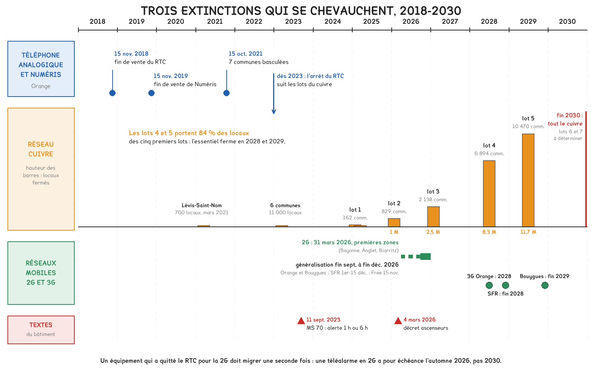
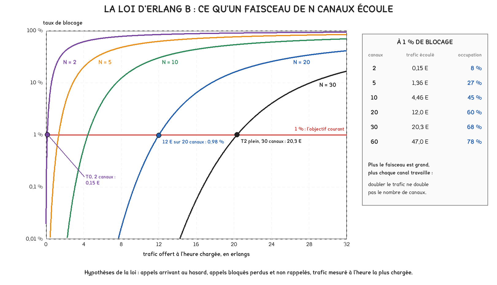

Document de formation du professeur — ne pas diffuser aux étudiants
Formation du professeur · BTS FED option C
La fin de vente du téléphone analogique en 2018, la fermeture du cuivre commune par commune jusqu'en 2030, et le décret du 4 mars 2026 qui impose de remplacer les téléalarmes d'ascenseur encore raccordées au réseau commuté, à la 2G ou à la 3G, près de 290 000 pour ces deux dernières. S'y ajoutent l'alerte des secours en ERP réécrite en 2023, la panne des numéros d'urgence du 2 juin 2021 et les téléalarmes britanniques restées muettes après la bascule au numérique.
Savoirs travaillés
Le 15 novembre 2018, Orange a cessé de vendre des lignes téléphoniques analogiques. Depuis, le réseau cuivre ferme commune par commune jusqu’à la fin de 2030, la 2G s’éteint à l’automne 2026, et un décret du 4 mars 2026 oblige à remplacer les téléalarmes d’ascenseur qui passent encore par le réseau commuté, la 2G ou la 3G. Aucune de ces décisions ne vient du bâtiment ; toutes lui imposent des travaux que le technicien de l’option C doit concevoir et mettre en service.
La ligne analogique rendait sans qu’on les demande quatre services : l’alimentation du poste par le central, un circuit réservé à chaque appel, des centraux nombreux et indépendants, la transparence à tout signal audible. La téléphonie sur IP peut rendre les mêmes, à condition que chacun soit dimensionné ; les six cas montrent ce qui arrive lorsque l’un d’eux ne l’a pas été.
| Cas | Ce que la ligne analogique assurait seule | Ce qu’il faut désormais dimensionner |
|---|---|---|
| La fin de vente du RTC, 2018 | un circuit de 64 kbit/s par appel | le débit réel d’un appel, en-têtes compris |
| La fermeture du cuivre, 2021-2030 | les canaux d’un accès Numéris | le nombre de canaux d’un trunk SIP |
| Les téléalarmes d’ascenseur, 2026 | une ligne présente et alimentée | le réseau de la téléalarme et son autonomie |
| L’alerte des secours en ERP, 2023 | un poste alimenté par le central | l’autonomie de toute la chaîne d’appel |
| Les numéros d’urgence, 2021 | des centraux nombreux et indépendants | la redondance réelle des serveurs d’appels |
| La téléassistance, 2023-2025 | la transparence à tout signal audible | le codec, le protocole et le secours |
Ce qui n’est pas dimensionné n’existe plus. Le RTC fournissait les quatre services par construction ; l’IP ne fournit que ce qui a été prévu, en heures d’autonomie, en canaux et en kilobits par seconde, en redondance réellement indépendante, en choix de codec ou de protocole.

Le 15 novembre 2018, Orange cesse de commercialiser les lignes du réseau téléphonique commuté (RTC) en métropole, puis les accès Numéris le 15 novembre 2019. Selon Maire-Info, les lignes RTC portaient alors 22 % des lignes fixes offrant le service téléphonique ; la Banque des Territoires comptait environ 9 millions de lignes à migrer. Le 15 octobre 2021, selon Univers Freebox, le RTC s’arrête à titre d’essai dans sept communes : Osny, dans le Val-d’Oise, et Concarneau, Elliant, Melgven, Saint-Yvi, Rosporden et Tourc’h, dans le Finistère.
À l’intérieur du réseau, la voix n’était déjà plus analogique : entre les centraux, elle est échantillonnée 8 000 fois par seconde et codée sur 8 bits, soit 64 kbit/s selon la loi G.711, dans un circuit réservé pour toute la durée de l’appel. La voix sur IP transporte les mêmes 64 kbit/s en paquets, et chaque paquet emporte ses en-têtes : c’est ce qui sépare le débit du codec du débit de l’appel.
D = R + 8 · H / T
Le second terme ne dépend pas du codec : à 20 ms sur Ethernet, il vaut 23,2 kbit/s, que la voix soit compressée ou non.
Pour aller plus loin
Un paquet porte T secondes de voix, soit R · T / 8 octets, plus H octets d’en-têtes, et il en part 1 / T par seconde. Le débit vaut donc 8 · (R · T / 8 + H) / T = R + 8 · H / T : la voix, plus le prix du découpage en paquets. L’en-tête RTP compte 12 octets selon la RFC 3550, UDP 8 et IPv4 20 ; ce que l’on ajoute ensuite dépend de ce que l’on dimensionne.
| Ce que l’on compte, paquets de 20 ms | H | G.711 | G.729 |
|---|---|---|---|
| le paquet IP : RTP, UDP, IPv4 | 40 o | 80,0 kbit/s | 24,0 kbit/s |
| la trame Ethernet : en-tête 14 o, contrôle 4 o | 58 o | 87,2 kbit/s | 31,2 kbit/s |
| la trame étiquetée du VLAN voix | 62 o | 88,8 kbit/s | 32,8 kbit/s |
| l’occupation du câble : préambule 8 o, intervalle 12 o | 82 o | 96,8 kbit/s | 40,8 kbit/s |
Un port de commutateur se remplit au rythme de la dernière ligne ; l’accès de l’opérateur se dimensionne sur la première, plus sa propre encapsulation. Le G.729 divise le codec par huit, la trame par 2,8 seulement et l’occupation du câble par 2,4 : compresser la voix n’allège que la plus petite part du paquet.
La durée de paquet est un compromis : un paquet de T secondes ajoute T au délai, puisque le premier échantillon attend que le paquet soit plein, mais 8 · H / T croît quand T diminue. En G.711 sur Ethernet, 10 ms coûtent 110,4 kbit/s, 27 % de plus qu’à 20 ms ; 30 ms, 79,5 kbit/s.
64 kbit/s est le débit du codec et non celui de l’appel, et l’appel occupe son débit dans chaque sens. Sur un accès asymétrique, la voie montante fixe le nombre d’appels simultanés : diviser le débit descendant par 87,2 kbit/s surestime l’accès du rapport entre ses deux sens.
En classe. En DOMA9 (téléphonie numérique et IP, multimédia), après le tableau i, faire ajouter l’étiquette de VLAN, puis le préambule et l’intervalle : le gain du G.729 tombe de 2,8 à 2,4. En DOMB9 (mettre en service une installation téléphonique IP), capturer un appel et compter cinquante paquets par seconde dans chaque sens ; la longueur affichée diffère de celle de la séance, ce qu’explique la première question qui déstabilise.
Selon l’Arcep, Orange ferme son réseau cuivre en deux temps. La phase de transition a éprouvé la méthode : Lévis-Saint-Nom, dans les Yvelines, 700 locaux, fermée techniquement en mars 2021 ; six communes et 11 000 locaux en mars 2023 ; le lot 1, 162 communes et 209 000 locaux, fin janvier 2025. La phase industrielle enchaîne des lots annuels croissants : 829 communes et environ un million de locaux, fermées pour l’essentiel le 27 janvier 2026 ; 2 138 communes et 2,5 millions de locaux le 31 janvier 2027 ; puis 6 894 et 10 470 communes, par vagues, en 2028 et 2029.
La paire ne portait pas que le téléphone : la Banque des Territoires citait dès 2018 l’alarme, la supervision, la télésurveillance, la télérelève, les lignes d’ascenseur et les terminaux de paiement. Le standard, lui, était souvent raccordé par Numéris ; selon Orange, un accès de base offre 2 communications simultanées, un accès primaire de 15 à 30 canaux. Le trunk SIP qui les remplace se vend aussi en canaux, et leur nombre se calcule par la loi qui dimensionnait les centraux, celle d’Erlang.
Le trafic se mesure en erlangs, un erlang étant un canal occupé en permanence : 240 appels de 3 minutes à l’heure la plus chargée font 240 × 3 / 60 = 12 E. La loi d’Erlang B donne la probabilité qu’un appel trouve tous les canaux pris, si les appels arrivent au hasard et si un appel bloqué est perdu.
B = (AN / N!) / (1 + A + A2 / 2! + … + AN / N!)
Sans factorielle : B₀ = 1, puis Bₙ = A · Bₙ₋₁ / (n + A · Bₙ₋₁) pour n allant de 1 à N.
Pour aller plus loin
Soit pₖ la probabilité que k canaux soient occupés, k allant de 0 à N. Les appels arrivent au hasard au taux λ, en appels par heure ; une conversation dure en moyenne h heures, donc chacune de celles en cours s’achève au taux 1 / h.
En régime établi, le faisceau passe aussi souvent de k à k + 1 que de k + 1 à k. Le premier passage demande une arrivée, le second la fin de l’une des k + 1 conversations : λ · pₖ = (k + 1) / h · pₖ₊₁. Avec A = λ · h, il vient pₖ₊₁ = pₖ · A / (k + 1), puis pₖ = p₀ · Ak / k!. La somme des pₖ valant 1, p₀ = 1 / (1 + A + … + AN / N!). Un appel est bloqué s’il arrive quand k = N, et des arrivées au hasard voient le faisceau dans son état moyen : B = pN, c’est la formule.
La récurrence s’en déduit en écrivant 1 / Bₙ = 1 + (n / A) · 1 / Bₙ₋₁. Pour A = 12 E, elle donne 1,65 % avec 19 canaux et 0,98 % avec 20.
Le résultat ne dépend de la durée des appels que par sa moyenne, quelle que soit la loi des durées ; il dépend en revanche entièrement des deux hypothèses d’arrivées au hasard et d’appels perdus.
À 1 %, un accès primaire de 30 canaux écoulait 20,3 E, environ 400 appels de 3 minutes par heure, et un accès de base de 2 canaux 0,15 E, trois appels : un grand faisceau fait mieux travailler chacun de ses canaux, 68 % du temps contre 8 %.

Un faisceau se dimensionne en erlangs à l’heure chargée, jamais en nombre de salariés. Une proportion fixe ne peut pas être juste à toutes les tailles : l’effet de taille lui fait sous-dimensionner les petits sites et surdimensionner les grands.
En classe. En DOMA9, reprendre la question k : 48 salariés, un canal pour quatre, soit 12 canaux. À 0,1 E par salarié, la loi d’Erlang en demande 11 pour 1 % : la règle tombe juste à cette taille, mais pas à 8 salariés, 2 canaux et 15 % de blocage, ni à 150, 38 canaux là où 24 suffisent. En DOMB9, c’est ce nombre que l’étudiant règle sur l’IPBX pour le trunk.
Le parc français compte environ 650 000 ascenseurs, dont 230 000 équipés d’une téléalarme en 2G et 60 000 en 3G, selon la Fédération des ascenseurs, citée par le député Bastien Lachaud dans sa question écrite n° 9759 du 16 septembre 2025 ; 60 % desservent des logements. Le ministère du Logement a répondu le 3 mars 2026, et le décret n° 2026-166, visant à garantir la sécurité des ascenseurs face à l’arrêt de certains réseaux téléphoniques, a été signé le lendemain. Le 31 mars, selon l’Arcep, la 2G s’éteignait à Bayonne, Anglet et Biarritz, premières zones d’un arrêt généralisé de la fin septembre à la fin décembre 2026.
Le décret exclut trois technologies sans en imposer une. Restent deux voies : un module mobile en 4G, qui porte sa batterie et ne dépend de rien dans l’immeuble, ou un raccordement IP par le réseau du bâtiment, qui suppose un routeur et un commutateur secourus, faute de quoi la téléalarme se tait pendant la coupure même qui a immobilisé la cabine. Le choix se fait sur ce qui reste alimenté quand l’ascenseur s’arrête, avant de se faire sur le prix du module.
Un module « 4G » ne suffit pas. L’Arcep prévient qu’un terminal compatible avec la 4G peut ne pas l’être avec la voix en 4G, la VoLTE ; un module qui passe ses appels vocaux en se repliant sur la 2G ou la 3G se taira avec elles. La réception exige donc la compatibilité VoLTE et un appel vocal réel vers le service d’intervention.
Pour aller plus loin
Publiée en 2003 et révisée en 2018, la norme a pour édition française la NF EN 81-28, corrigée en janvier 2019 selon l’Afnor. Le texte n’est pas en accès libre ; deux fabricants, Kone et Avire, en publient les exigences chiffrées : ce sont des sources commerciales, mais concordantes.
Selon eux, la téléalarme passe un appel de test au moins tous les trois jours, qui renseigne aussi, précise Avire, sur le haut-parleur, le microphone et la batterie. Son secours tient une heure en veille, dont au moins quinze minutes de conversation. L’appel identifie l’ascenseur, et deux pictogrammes indiquent en cabine que l’alarme est enregistrée, puis que la communication est établie.
Les deux vérifications ne font pas double emploi. Le test automatique prouve que le chemin existait à l’instant du test ; la visite des six semaines contrôle ce qu’il ne voit pas, un bouton bloqué, un pictogramme éteint, un numéro de destination périmé. Quand la 2G s’éteint, les tests échouent en série : le service de réception a intérêt à traiter l’absence de test comme une alarme.
En classe. En DOMA18 (alarme intrusion, assistance aux personnes), faire lire l’article R134-6 et demander si une téléalarme posée en 2019 avec un module mobile est conforme aujourd’hui : la réponse dépend de la génération du module, à chercher sur la plaque ou dans la notice. En DOMB20 (interphonie : platine de rue, moniteur, commande de gâche), poser la même question pour la platine de l’atelier, puisque l’Arcep range les interphones et visiophones connectés parmi les appareils menacés.
L’arrêté du 11 septembre 2023, publié au Journal officiel du 19 septembre, a réécrit l’article MS 70 du règlement de sécurité contre l’incendie dans les établissements recevant du public. L’alerte des sapeurs-pompiers y est assurée par un dispositif dit de liaison prioritaire, fixe, qui identifie l’établissement et achemine l’appel en priorité, ou par tout autre moyen de communication. Dans les deux cas, le moyen doit assurer une liaison vocale de qualité et rester fiable en cas de coupure de l’alimentation électrique pendant au moins une heure, six heures pour les établissements comportant des locaux à sommeil.
Avec la ligne analogique, le poste était alimenté depuis le central et l’établissement appelait les secours pendant une coupure. En téléphonie sur IP, le poste est alimenté par son câble, en PoE, depuis un commutateur raccordé au 230 V, et l’appel traverse l’IPBX, le routeur et la terminaison optique, qui ont chacun besoin du secteur. Le gouvernement l’a admis le 5 mars 2026, en réponse à la sénatrice Karine Daniel : la fibre, plus résistante aux intempéries que le cuivre vieillissant, partage certaines vulnérabilités face aux coupures d’électricité.
Pour aller plus loin
Prenons des puissances plausibles, à remplacer par celles des fiches réelles : terminaison optique 10 W, commutateur 25 W avec le poste qu’il alimente, IPBX 15 W, poste 5 W, soit 55 W pour la seule chaîne d’alerte, et 330 Wh utiles en six heures.
Un onduleur ne restitue pas toute l’énergie de sa batterie. Avec un rendement de 0,85 et une décharge limitée à 80 % de la capacité, il faut 330 / (0,85 × 0,8) = 485 Wh, environ 40 Ah sous 12 V ; avec une décharge limitée à 50 %, 776 Wh.
Un terminal d’alerte dédié, en 4G avec voix sur LTE, consommant par hypothèse 2 W, demande 12 Wh pour six heures, 15 Wh avec un rendement de 0,8 : un rapport de l’ordre de trente. La méthode est celle de la page Prof 4 pour une centrale ; seul change le nombre de maillons.
Pour tenir six heures, on ne secourt pas la téléphonie de l’établissement : on secourt un lien d’alerte. La « liaison vocale de qualité » que le texte ne chiffre pas se tient, elle, par la priorité donnée à la voix, traitée dans la question sur les 150 ms.
En classe. En DOMA20 (SSI, balisage et sources secourues), demander s’il faut secourir le commutateur des étages d’un hôtel de quarante chambres passé en téléphonie sur IP pour satisfaire l’article MS 70 : non, seul le chemin de l’appel d’alerte doit tenir six heures, et l’étudiant doit savoir le tracer. En DOMB6 (commutateur, plan d’adressage, PoE), faire relever la puissance réellement consommée par un poste et la comparer aux 7,0 W réservés pour sa classe.
Le 2 juin 2021, de 16 h 45 à minuit, des appels vers les numéros d’urgence n’aboutissent pas. Selon les conclusions de l’enquête interne publiées par Orange, l’interconnexion entre la voix mobile, la voix sur IP et le réseau commuté reposait sur une plateforme de serveurs d’appels, redondante entre six sites distincts. Un défaut du logiciel de ces serveurs s’est activé à la suite de commandes usuelles de reconnexion, pendant une opération de modernisation et d’augmentation de capacité commencée début mai. Environ 11 800 appels, soit 11 % du total, n’ont pas été acheminés.
Dans le RTC, la commutation était répartie entre de nombreux centraux, et la panne de l’un restait circonscrite à sa zone. En IP, l’établissement et la libération de chaque appel passent par des serveurs d’appels peu nombreux, qui échangent la signalisation SIP ; la voix circule ensuite en RTP entre les extrémités. Un serveur hors service n’interrompt pas nécessairement les conversations en cours ; il empêche d’en établir de nouvelles. Dans un bâtiment, l’IPBX joue ce rôle et en a la fragilité : d’où un second IPBX, un second accès par un autre support, et un chemin d’appel d’urgence qui ne dépend pas de l’IPBX.
Pour aller plus loin
Deux serveurs disponibles chacun 99,9 % du temps sont indisponibles 526 minutes par an chacun. S’ils tombent indépendamment, la paire n’est indisponible que lorsque les deux le sont ensemble : (0,001)² = 10⁻⁶, une demi-minute par an.
Le modèle usuel en fiabilité attribue une fraction β des défaillances à une cause commune, qui frappe les deux à la fois : même logiciel, même procédure, même opération en cours. L’indisponibilité devient β · 0,001 + ((1 − β) · 0,001)² ; avec β = 10 %, 1,0 × 10⁻⁴, soit 53 minutes par an, cent fois plus. Le terme commun domine dès que β dépasse la probabilité de panne elle-même, ici un millième ; un septième site identique n’y change rien. Seule la diversité réduit β : un autre logiciel, un autre fournisseur, un autre support.
Six sites ne font pas six chances : des sites qui exécutent le même logiciel et subissent la même opération tombent ensemble. L’étudiant qui propose deux IPBX identiques pour « sécuriser les appels d’urgence » a doublé le matériel, pas la sûreté.
En classe. En DOMB9, une fois l’installation en service, établir une conversation puis débrancher l’IPBX. Si elle continue, la voix passait de poste à poste ; si elle s’arrête, l’IPBX relayait aussi la voix. Dans les deux cas, plus aucun appel ne s’établit, ce qui démontre la séparation entre signalisation et voix et prépare la question qui compte : par où passe l’appel vers le 18 quand l’IPBX est éteint ?
Le 18 décembre 2023, le gouvernement britannique annonce qu’à la suite d’incidents graves, des téléalarmes ayant cessé de fonctionner après le passage de leur ligne au numérique, les principaux opérateurs, dont BT, Sky, Virgin Media O2 et TalkTalk, signent une charte : aucun utilisateur de téléassistance ne sera basculé sans qu’une solution compatible et en état de marche ait été confirmée. Le plan d’action national du 11 février 2025 estime à 2 millions le nombre d’utilisateurs de téléassistance au Royaume-Uni et fait état, parmi ces incidents, d’un petit nombre de décès. La bascule doit être achevée pour l’essentiel fin janvier 2027.
Un transmetteur conçu pour le cuivre suppose une ligne transparente : ce qui entre dans la bande de 300 à 3 400 Hz ressort à l’autre bout. Un codec de voix reproduit ce qui ressemble à de la parole, sans rien promettre d’autre. La RFC 4733 le dit pour les tonalités du clavier : un codec à bas débit ne garantit pas de les reproduire assez fidèlement pour une reconnaissance automatique, et c’est pourquoi elle les transporte comme des événements nommés plutôt que comme du son.
Pour aller plus loin
Sans compression même, trois mécanismes abîment un signal de données : la mémoire tampon de gigue allonge ou raccourcit les silences quand elle s’adapte, le masquage des pertes remplace un paquet perdu par un son plausible, et la suppression des silences, si elle est active, coupe ce qu’elle prend pour du bruit.
Les pertes suffisent à le chiffrer. À 1 %, seuil jugé acceptable pour la voix, et 50 paquets par seconde, un paquet se perd toutes les deux secondes en moyenne ; un message de tonalités de deux secondes, cent paquets, arrive intact avec une probabilité de 0,99100, soit 37 %, et de 90 % à 0,1 % de pertes. Un seuil conçu pour l’oreille ne vaut rien pour un protocole de données. Le remède durable est un protocole conçu pour l’IP, avec accusé de réception, que le plan britannique désigne comme BS 8521-2 ou NowIP, ou le réseau mobile.
Brancher un transmetteur sur le port téléphonique d’un routeur ne vaut pas migration. Selon le plan britannique, la fiabilité dépend du modèle d’alarme, du protocole, du type de ligne, de l’opérateur et de l’équipement de la centrale : seul un appel d’alarme réel, reçu et acquitté par la centrale d’écoute, valide le raccordement.
En France, le financement se répartit entre deux dispositifs à ne pas confondre. L’abonnement de téléassistance peut entrer dans le plan d’aide de l’allocation personnalisée d’autonomie, pour les personnes évaluées en GIR 1 à 4, ou être aidé par les caisses de retraite, les communes et le crédit d’impôt des services à la personne. Les travaux d’adaptation du logement relèvent de MaPrimeAdapt’, ouverte le 1er janvier 2024 par l’Agence nationale de l’habitat.
Pour aller plus loin
Elle s’adresse aux propriétaires occupants et aux locataires du parc privé âgés de 70 ans ou plus, sans condition de perte d’autonomie ; de 60 à 69 ans, sur évaluation de la perte d’autonomie par la grille AGGIR ; et, sans condition d’âge, aux personnes justifiant d’un taux d’incapacité d’au moins 50 % ou éligibles à la prestation de compensation du handicap. Elle finance 70 % des travaux pour les ménages aux ressources très modestes et 50 % pour les ménages modestes, dans un plafond de 22 000 € HT, soit 15 400 € ou 11 000 € au plus, avec un assistant à maîtrise d’ouvrage habilité par l’Anah.
Parmi les exemples de travaux que cite Service-Public, l’éclairage à détection de mouvement et les volets roulants relèvent directement de l’option C. L’Anah annonce 36 740 logements adaptés en 2025, un peu plus de la moitié du rythme qu’exigerait son objectif de 680 000 en dix ans ; son guichet a rouvert le 23 février 2026, à la promulgation de la loi de finances.
En classe. En DOMA18, faire dessiner le chemin d’une alarme de téléassistance, du médaillon à la centrale d’écoute, avant puis après la fermeture du cuivre : l’étudiant doit y placer l’adaptateur du routeur, le codec et l’alimentation du routeur. En DOMB21 (intrusion : centrale, détecteurs, sirène, transmetteur), demander par quel support et par quel protocole le transmetteur transmet, et ce qu’il deviendrait branché sur le port téléphonique d’un routeur sans batterie.
La loi d’Erlang suppose des appels indépendants, arrivant au hasard, et des appels bloqués perdus. En situation de crise, les deux hypothèses tombent ensemble : une panne, une tempête ou un retour du secteur font appeler beaucoup de monde à la même minute, et chaque appelant bloqué recompose aussitôt. Le faisceau reçoit alors la demande gonflée de ses propres rappels.
Si une fraction r des appels bloqués est aussitôt renouvelée, le trafic offert vérifie A = A₀ / (1 − r · B), où A₀ est la demande réelle et B le taux de blocage, lui-même fonction de A ; on résout par itérations. Le tableau reprend le faisceau de 20 canaux dimensionné pour 12 E à 1 %, avec 90 % d’appelants qui recomposent.
| Demande réelle A₀ | Blocage prévu par Erlang | Trafic offert, rappels compris | Blocage par tentative | Tentatives par appelant |
|---|---|---|---|---|
| 12 E, l’heure chargée ordinaire | 0,98 % | 12,1 E | 1,06 % | 1,01 |
| 15 E, 25 % de plus | 4,6 % | 15,9 E | 6,2 % | 1,06 |
| 18 E, 50 % de plus | 10,9 % | 22,4 E | 22,0 % | 1,25 |
| 24 E, le double | 25,7 % | 63,9 E | 69,4 % | 2,66 |
Au double de la demande, le faisceau reçoit 2,7 tentatives par appelant, et sept sur dix échouent. Le rapport d’Orange sur le 2 juin 2021 ne chiffre pas les rappels ; le modèle dit seulement pourquoi les appelants qui recomposent entretiennent une saturation amorcée, et pourquoi les serveurs de signalisation, qui traitent chaque tentative, en portent la charge.
Pour aller plus loin
Chaque tentative est bloquée avec la probabilité B, et l’appelant recompose avec la probabilité r : le nombre moyen de tentatives par appelant vaut 1 / (1 − r · B), d’où A = A₀ / (1 − r · B). La probabilité de renoncer finalement vaut B · (1 − r) / (1 − r · B) : au double de la demande, 18 %, contre 26 % sans rappel. L’appelant obstiné passe donc un peu plus souvent, pendant que le réseau traite 2,7 fois plus de tentatives.
La méthode change de grandeur. En crise, on dimensionne la signalisation en tentatives par seconde plutôt que le faisceau en erlangs ; on étale les rappels automatiques des équipements par une temporisation aléatoire ; et l’on garde une voie d’urgence hors du faisceau commun. Un parc de transmetteurs programmés pour signaler le retour du secteur, s’il appelait tout entier à la même minute, produirait exactement cette avalanche.
La séance vérifie un blocage pour un nombre de canaux donné ; le bureau d’études choisit les canaux, puis le débit, pour un blocage fixé. Sont fixés le trafic à l’heure chargée, lu dans le journal de l’IPBX, et l’objectif ; restent libres les canaux, le codec et l’accès. Soit un site de 150 postes dont le journal montre 240 appels extérieurs de 3 minutes en moyenne à l’heure la plus chargée, objectif 1 % :
La règle d’un canal pour quatre salariés aurait donné 38 canaux, près du double, et chaque canal d’un trunk se paie. Le dimensionnement ne tolère pas, en revanche, une erreur sur l’heure chargée : c’est la donnée à vérifier avant tout calcul.
Pour aller plus loin
Avec 20 % de trafic en plus, 14,4 E, les 20 canaux bloquent 3,6 % des appels, et il en faudrait 23 pour revenir à 1 %. Le piège classique est la moyenne : un site qui passe 1 200 appels de 3 minutes par jour, sur huit heures, présente 7,5 E en moyenne ; si l’heure la plus chargée porte 20 % des appels du jour, elle vaut 12 E. Dimensionner sur la moyenne donnerait 15 canaux, et 8,6 % de blocage à l’heure de pointe. On lit donc l’heure la plus chargée des jours les plus chargés, sur plusieurs semaines, avec une marge pour la croissance du site.
Pour aller plus loin
Énoncé. Un poste est réglé en G.729, par paquets de 30 ms, dans un VLAN voix. Calculer le débit de sa trame et l’occupation du câble, dans un sens.
Résolution. Voix par paquet : 8 000 × 0,030 / 8 = 30 octets. Trame étiquetée : 30 + 40 + 18 + 4 = 92 octets ; 112 avec le préambule et l’intervalle. Paquets : 1 / 0,030 = 33,3 par seconde. Débits : 92 × 8 × 33,3 = 24,5 kbit/s en trame, 112 × 8 × 33,3 = 29,9 kbit/s sur le câble ; la formule donne 8 + 8 × 82 / 0,030 = 29,9 kbit/s.
Vérification de plausibilité. Le résultat dépasse les 8 kbit/s du codec et reste sous les 40,8 kbit/s du même codec à 20 ms, puisqu’un paquet plus long allège les en-têtes.
Ce que l’étudiant doit rédiger. La formule avant les nombres, la couche où le débit est compté, et le sens : le résultat vaut pour chacun des deux.
Énoncé. Une centrale d’écoute de téléassistance reçoit, à l’heure la plus chargée, 150 appels de 4 minutes en moyenne. Combien de lignes entrantes pour un blocage de 1 %, puis de 0,1 %, objectif plus prudent pour des appels de détresse ?
Résolution. A = 150 × 4 / 60 = 10 E. À 1 % : 1,29 % avec 17 lignes, 0,71 % avec 18, donc 18 lignes. À 0,1 % : 0,19 % avec 20 lignes, 0,089 % avec 21, donc 21 lignes. Trois lignes de plus divisent par huit les appels perdus, de 1,1 à 0,13 par heure chargée. En G.711, 21 canaux demandent 1,68 Mbit/s par sens au niveau IP.
Vérification de plausibilité. Chaque ligne est occupée 55 % du temps avec 18 lignes, 48 % avec 21 : cohérent avec la figure, où 20 canaux travaillent à 60 % pour 1 %.
Ce que l’étudiant doit rédiger. L’objectif de blocage, justifié par la nature des appels, avant le calcul. L’erreur attendue est d’appliquer la loi à une vague d’alarmes simultanées, précisément le cas où elle ne vaut plus.
Énoncé. Un hôtel de 60 chambres, dans une commune du lot 3 dont la fermeture technique du cuivre est fixée au 31 janvier 2027, a deux lignes analogiques : le standard et la téléalarme de l’ascenseur. À l’heure la plus chargée, il passe 36 appels extérieurs de 2,5 minutes. Proposer l’architecture de remplacement.
Choisir la méthode avant de calculer. Trois fonctions, trois règles : le standard relève d’un dimensionnement de faisceau, la téléalarme de l’article R134-6 du code de la construction, l’alerte des secours de l’article MS 70, puisque l’hôtel comporte des locaux à sommeil.
Résolution. Standard : A = 36 × 2,5 / 60 = 1,5 E ; le blocage vaut 4,8 % avec 4 canaux, 1,4 % avec 5 et 0,35 % avec 6, donc 6 canaux, soit 480 kbit/s par sens en G.711 au niveau IP. Téléalarme : elle passe par le réseau commuté, et le propriétaire doit la remplacer depuis le 1er avril 2026, sans attendre 2027, par un module 4G compatible VoLTE secouru une heure, ou par un raccordement IP secouru au moins autant. Alerte : un terminal dédié en 4G à batterie intégrée, de l’ordre de 15 Wh pour six heures.
Vérification de plausibilité. Six canaux pour 1,5 E, chacun occupé 25 % du temps : cohérent avec le tableau de la figure, où 5 canaux écoulent 1,36 E à 1 %.
Ce que l’étudiant doit rédiger. Les trois textes qui fondent les trois choix. L’erreur attendue est un module 2G, moins cher : inutilisable avant la fermeture du cuivre, il relève dès son installation de l’obligation de remplacement.
| Grandeur | Ordre de grandeur |
|---|---|
| Débit du codec | G.711 : 64 kbit/s · G.729 : 8 kbit/s |
| Un appel G.711 par paquets de 20 ms, dans un sens | 80 kbit/s en IP · 87,2 en trame Ethernet · 96,8 sur le câble dans un VLAN |
| Un appel G.729 par paquets de 20 ms, dans un sens | 24 · 31,2 · 40,8 kbit/s |
| Délai, gigue, pertes | 150 ms, 30 ms, 1 % de confort ; 400 ms, limite de planification de la G.114 (2003) |
| Trafic écoulé à 1 % de blocage | 2 canaux : 0,15 E · 10 : 4,46 E · 20 : 12,0 E · 30 : 20,3 E |
| Téléalarme d’ascenseur, selon deux fabricants | test automatique au moins tous les 3 jours · 1 h de veille dont 15 min de conversation |
| Vérification des moyens d’alerte d’un ascenseur | toutes les 6 semaines, depuis le 1er avril 2026 |
| Ascenseurs en France | 650 000, dont 290 000 avec une téléalarme en 2G ou en 3G |
| Remplacer une téléalarme | 800 à 1 500 € ; de 232 à 435 millions d’euros pour les 290 000 |
| Alerte des secours en ERP, article MS 70 | 1 h sans secteur, 6 h avec locaux à sommeil |
| Accès aux secours pendant une coupure, Royaume-Uni | 1 h au minimum, exigence de l’Ofcom |
| Fermeture du cuivre | préavis de 36 mois par défaut, au moins 12 mois entre fermeture commerciale et technique |
| Lots 4 et 5 du plan cuivre | 84 % des locaux des cinq premiers lots, fermés en 2028 et 2029 |
| Arrêt de la 2G | généralisé de la fin septembre à la fin décembre 2026 ; la 3G en 2028 et 2029 |
| MaPrimeAdapt’ | 50 ou 70 % d’un plafond de 22 000 € HT : 11 000 ou 15 400 € au plus |
| Poste IP en PoE de classe 2 · marque de la voix | 7,0 W réservés sur le port · EF, valeur 46 |
| Message de tonalités de 2 s, 1 % de pertes | 37 % de chances d’arriver intact |
Deux réflexes trient la plupart des affirmations. Un appel G.711 coûte de 80 à 97 kbit/s par sens selon la couche où on le compte, jamais 64. Un faisceau de N canaux écoule, à 1 % de blocage, nettement moins de N erlangs, d’autant moins que N est petit.
Pour aller plus loin
Les deux. Une trame de voix G.711 à 20 ms compte 200 octets de paquet IP, 14 d’en-tête Ethernet et 4 de contrôle final, soit 218 octets sur le câble. La plupart des cartes réseau vérifient puis retirent ces 4 octets avant de remettre la trame au logiciel de capture, qui affiche 214 ; dans le VLAN voix, l’étiquette ajoute 4 octets à chacun de ces nombres. Le câble porte encore 20 octets de préambule et d’intervalle, soit 238. L’appel vaut donc 85,6, 87,2 ou 95,2 kbit/s dans un sens : un débit n’a de sens qu’avec la couche où il est compté.
D’une valeur de confort, et non d’un plafond normatif. La recommandation G.114 de l’UIT fixe, dans son édition de 2003, un délai de 400 ms dans un sens à ne pas dépasser pour la planification générale des réseaux, en précisant que les usages très interactifs, dont beaucoup d’appels vocaux, souffrent bien avant. Un réseau d’entreprise en reste loin ; un bond par satellite géostationnaire coûte à lui seul près de 240 ms, le temps de monter à 35 786 km et d’en redescendre à la vitesse de la lumière.
Dans un bâtiment, le délai pose rarement problème ; la gigue et les pertes, si, et elles naissent dans les files d’attente. Trois réglages les tiennent : le poste dans un VLAN voix, séparé des données ; ses paquets marqués EF, valeur 46, que la RFC 3246 réserve depuis 2002 à un service à faibles pertes, faible délai et faible gigue ; cette file servie avant les autres dans chaque commutateur du trajet. Sans le dernier, une sauvegarde qui remplit la file d’un port suffit à perdre des paquets de voix ; sur l’accès, seul un débit réservé à la voix, écrit dans le contrat, garantit la priorité.
Elle s’applique mal, et dans le bon sens. Elle suppose une population illimitée d’appelants ; avec dix personnes et quatre lignes toutes occupées, il ne reste que six appelants possibles, et le rythme des appels baisse. La loi d’Engset tient compte de cette population finie : pour environ 2 E sur 4 lignes, elle donne 6,7 % de blocage, contre 9,8 % pour Erlang.
Erlang surestime le blocage d’un site dont chaque salarié pèse dans le trafic ; à 1 %, il demande un canal de plus qu’Engset, que le site compte dix postes ou deux cents, ce qui est l’erreur la moins grave. Les deux lois ne se rejoignent que pour une population très grande devant le trafic de chacun : pour une centrale d’écoute de 5 000 abonnés, toutes deux donnent 0,70 %.
Oui, à deux conditions que DOMB10 (distribuer audio et vidéo sur l’infrastructure VDI) doit faire vérifier. Une image 1080p à 60 images par seconde et 24 bits par point pèse 1 920 × 1 080 × 60 × 24 = 2,99 Gbit/s ; compressée, de l’ordre de 15 Mbit/s selon l’hypothèse de la séance A9, soit 155 appels G.711 sur le câble.
La première condition est la séparation : la vidéo dans son VLAN, la voix dans le sien, avec la priorité à la voix. La seconde est moins connue : un flux destiné à plusieurs écrans part en multidiffusion, et un commutateur sans IGMP snooping, qui ne suit pas les abonnements des écrans, le recopie sur tous les ports du VLAN. Si ce VLAN est celui des ordinateurs, que les postes relaient par leur port intégré, huit flux de 15 Mbit/s font 120 Mbit/s, de quoi saturer le port à 100 Mbit/s d’un poste qui n’a rien demandé.
Sources consultées les 13 et 14 septembre 2026.
Page de formation, réservée au professeur. Elle s'appuie sur des cas réels documentés ; les sources sont données en fin de page.